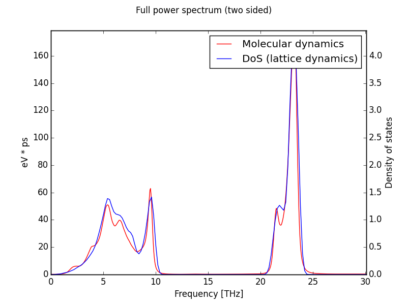
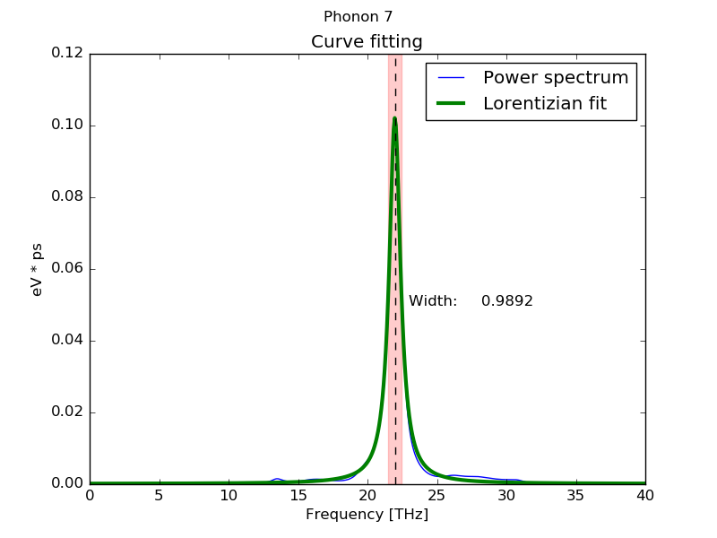
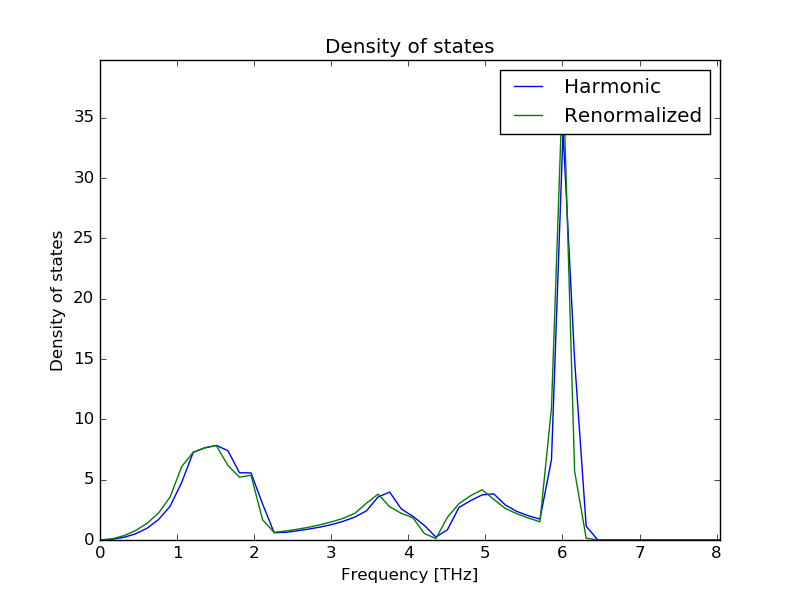

Introduction
Dynaphopy calculates the phonon linewidths and frequency shifts analizing the power spectrum of the velocity projected into the
phonon modes coordinates. As a first step the velocity is be projected into the point in thereciprocal space (wave vector) in which
the harmonic phonon modes are defined.
To calculate this power spectrum dynaphopy can use either Fourier transform, or Maximum Entropy Method(MEM). Fourier transform is a robust method widely used in many fields
of physics to descompose signals into elemental frequencies without information loss. On the other hand, MEM is a very fast method that approximates the whole signal into a much simpler function made by the most representative frequencies. This way it allows to separate the noise from the important data showing smoother spectra that becomes easier to analize. For this reason MEM is highly recomended when working with very long MD and is the default option.
Fourier transform algorith may be used to corroborate the results obtained using MEM. Fourier transform is expected to work better when the number of samples is low, and it will yield better measures of the power spectrum area if the spectra is calculated with high resolution.
Power spectra
The power spectrum calculated by Dynaphopy can be either displayed in a matplotlib X window or stored in a file. All power spectra calculated by DynaPhoPy are by default two sided. The selection of the algorithm used to calculate the power spectra is defined by -psm flag followed by algorithm number.
At the present time there are 4 algorithms available:
- 0: Fourier transform algorithm (direct method).
- 1: Maximum Entropy Method algorithm.
- 2: Fast Fourier transform (using numpy).
- 3: Fast Fourier transform (using fftw).
- 4: Fast Fourier transform (using cuda).
$ dynaphopy input_file TRAJECTORY -psm 1
Fourier methods do not require additional parameters but Maximum Entropy Method (MEM) does. MEM allows to obtain smoother and faster power spectra interpolating the velocity using a polynomia which depends on a certain number of coefficents. The higher this number is, the heavier the calculation becomes and the result becomes closer to Fourier transfom solution. Fortunatelly, usually the convergence of the peaks shape in MEM can be found with 1000-3000 coeficients obtaining a very good performance. By default the number of coefficents used is 1000 but it can be changed using -cf followed by the number of coeficients.
$ dynaphopy input_file TRAJECTORY -cf 2000
Full power spectra
This options calculate the power spectrum of the autocorrelation function of the atomic velocity. That means that in principle it contains all the phonon frequencies present in the crystal. At infinite time steps and MD cell size limit, this power spectrum tends to the vibrational density of states (DOS).
Notice that the super cell size limit is practically unreachable. This is not a good method at all to calculate the DOS. For this purpose is better to interpolate a larger set of q points within the Brillouin zone. Refere to renormalized force constants section.Plot spectrum in a matplotlib X window:
$ dynaphopy input_file TRAJECTORY -pdAlong with the full power spectrum, the DOS is also displayed for comparison. If the renormalized force constants are calculated, also the DOS calculated with the renormalized force constants is shown. DOS is obtained interfacing with Phonopy.
 Power spectrum of GaN at 300K calculated using maximum entropy method. MD has been computed using LAMMPS in a cell of 3456 atoms.To save spectrum to file (DOS is not saved, for this purpose use phonopy) :
When this spectrum is requested, the area bellow the curve is also calculated. This area correspond to one half of the total kinetic energy of the phonon within the MD cell. According to the equipartition theorem, at high temperatures this area can be approximated to:$ dynaphopy input_file TRAJECTORY -sd filename$$ \frac{1}4 N K_bT$$
where N is the number of phonon in the MD cell, Kb the Boltzmann constant and T the temperature.Wave vector projection power spectra
This options request the velocity to be projected into a q point (wave vector) and obtain the power spectrum.
Plot spectrum in a matplotlib X window:
$ dynaphopy input_file OUTCAR -pwSave spectrum to file:
$ dynaphopy input_file TRAJECTORY -sw filename
Like in the full power spectrum calculation, this option also calculates the area of this spectrum. In this case, since the velocity has been projected, only contains the contribution of the phonon within the defined primitive cell.Phonon modes projection power spectra
This option requests the velocity to be projected into a q point (wave vector) and additionally projected it into each of the harmonic phonon modes defined in this point. This option requieres phonopy to be correctly installed and FORCE_SETS file has to be calculated first. The result is a set of phonon mode projections (one for each phonon) which are either displayed in the screen in different windows or stored in a file (one column for each phonon) sorted from lower to higher frequency.
Plot spectrum in a matplotlib X window:
$ dynaphopy input_file TRAJECTORY -ppSave spectrum to file:
$ dynaphopy input_file TRAJECTORY -sp filenameAdditional options
Use -r option to change the power spectrum range and resolution (start, end).
$ dynaphopy input_file TRAJECTORY -r 25 100The resolution of the power spectrum is defined by default to 0.05 THz. It can be changed by using --resolution option. Resolution is defined in THz. This option can also be modified using the interactive interface.
DynaPhoPy uses this value to optimize the calculation of the power spectra using FFT. Changing this value may affect the precision of the power spectra.$ dynaphopy input_file TRAJECTORY --resolution 0.01Use -q to change the recirpocal space point (wave vector) into which the velocity is projected. This option takes 3 real numbers (wave vector in reduced coordinates).
$ dynaphopy input_file TRAJECTORY -q 0.5 0 0.5The number of time steps used to calculate the power spectra may have great influence in the final result. Using more time steps will lead to more converged results, however, this will imply a increase of the computational time (specially for Fourier transform method. Additionally, usually the MD simulation will take some time to equilibrate. Those initial time steps can not be used and must be removed from the calculation. For this purpose DynaPhoPy includes some options to manipulate the input MD data. The main one is -n flag. This flag defines the number of steps used in the calculations starting from the back. In other words, it will take the last N steps of the MD file.
If the OUTCAR file contains less time steps than the especified in -n flag, all time steps will be used.$ dynaphopy input_file TRAJECTORY -n 5000All these option can be combined. In interactive mode these options can also be used as initial parameters that can be changed inside by menus. The only exception is -n flag that can not be changed. For very long MD the amount of RAM memory needed to do the calculations can be huge so the initial discarted time steps are erased from memory at the begining of the execution.
However, it is still necessary to keep the full MD trajectory in memory at the beginning before removing the initial steps. For detailed information about to work with huge MD data refere to special features
Phonon quasiparticle properties
Phonon linewidhts and frequency shifts can be obtained by direct analysis of power spectra. Using phonon modes projections
are the best way to analize the individual phonons since they are completly separated in individual power spectra containing only
one peak. Dynaphopy offers a tool to automatically fit the
obtained spectra to lorentzian functions and display the results on the screen. This tool is called peak analysis and is
requested through flag -pa.
This option works better with MEM method since the obtained sprectra are smoother. In case of Fourier trasform calculations
some smoothing methods may be used before fitting.
$ dynaphopy input_file TRAJECTORY -pa
When the calculation is finished the individual information of each phonon (sorted from low to high frequency) is displayed on the screen. Position and Width correspond to the anharmonic frequency and linewidth of the corresponding phonon (in this case the 7th phonon) respectively. Frequency shifts are calculated from the diference between the harmonic frequency and calculated anharmonic frequency (Position) of each peak.
Peak # 7
------------------------------------------
Width (FWHM): 0.98920371 THz
Position: 21.9736957 THz
Area (1/2<K>) (Lorentzian): 0.02523055 eV
Area (1/2<K>) (Total): 0.02562331 eV
<|dQ/dt|^2> : 0.10092221 eV
Occupation number: 0.61054975
Fit temperature 1171.15374 K
Base line 0.00012439 ev * ps
Maximum height: 0.10214808 eV * ps
Fitting global error : 0.03340609
Frequency shift: -0.82162488 THz
Frequency shift (+T. exp.): -0.92346783 THz
Width: Phonon linewidth
Position: Anharmonic phonon frequency
Area: The integration of the power spectrum. This area is associated to the kinetic energy of the phonon mode. For quite harmonic systems, acording to the equipartiion theorem, at high temperature this area is expecte to be close to:
$$ \frac{1}2 K_bT$$
However, due to the anharmonicity, this value may change. This temperature is calculated from the total power of the phonon-mode-projected projected power spectrum (area).<|dQ/dt|^2>: Time derivative of the phonon coordinate. Within the harmonic approximation, this value is equal to the total energy. In DynaPhoPy this value is calculated as double of the area.
$$ \left\langle E \right\rangle = \left\langle K \right\rangle + \left\langle V \right\rangle = 2 \cdot \left\langle K \right\rangle = \left\langle {{{\left| {\dot Q} \right|}^2}} \right\rangle = {K_b}T $$
From this equation the temperature can be obtained. This value is shown in Fit Temperature.Occupation number: Calculated from Bose-Einstein distribution.
$$n = \frac{{\left\langle E \right\rangle }}{{\hbar \omega }} - \frac{1}{2}$$
assuming that$$ \left\langle {{{\left| {\dot Q} \right|}^2}} \right\rangle = \left\langle E \right\rangle $$
where n is the occupation number and ω is the phonon frequency (Position).
Frequency shift: Difference between the anharmonic frequency (Position) and the harmonic frequency (obtained from phonopy).
Frequency shift (+T. exp.): Sum of the frequency shift calculated from the MD (described above) plus the frequency shift due to thermal expansion (calculated from the QHA force constants).
Fitting global error: Fitting error is calculated as the average of the standard errors of the position and the width divided by the squareroot of the area to make it dimensionless so it can be comparable between diferent peak sizes. The standard errors are obtained from the squareroot of the diagonal elements of the covariance matrix
$$ Global error = \frac{(e_p + e_w)}{2\sqrt(A)} $$
By default, when the calculation is finished, a plot is shown for each phonon mode showing the fitting result for visual inspection.
This is convenient for visual analysis of short MD trajectories, but when the calculations are long, specially using Fourier transform, or the calculations are done in cluster computers xwindows may be inconvinent. In this case flag --silent can be used. Using this flag only the text data is shown in the screen and the phonon information wich can be stored redirecting the output to a file.
$ dynaphopy input_file TRAJECTORY -pa --silent > output.log
Fitting function selection
You can select the function used to fit the power spectrum by option --fitting_function followed by the function number. If this option is not specified function number 0 is used.
$ dynaphopy input_file TRAJECTORY -pa --fitting_function 0At the present time there are 3 functions available:
0: Lorentzian function
This is the default fitting function$$ G(\omega) = \frac{A/\pi \gamma}{ 1+ [(\omega - \omega_0)/\gamma]^2}+C $$
where A is the area under the curve, ω0 is the peak center γ the width, and C the base line.
1: Asymmetric Lorentzian function
Sometimes phonon modes present a power spectrum with very asymmetric peaks, specially in soft phonon modes. These peaks can be fitted better usign asymmetric lorentzian functions. The asymmetric function used in DynaPhoPy is defined in this article[1] and is defined by:$$ G(\omega) = \frac{B/\pi \gamma(\omega)}{ 1+ [(\omega - \omega_0)/\gamma(\omega)]^2}+C $$
where B is a fitting parameter and γ(ω) the variable width defined as:$$ \gamma(\omega) = \frac{2 \gamma_0}{1+e^{a(\omega - \omega_0)}} $$
where a is the peak asymmetry. When a = 0 this function is equivalent to a Lorentzian function. DynaPhoPy calculates the phonon frequency (ωmax) at the maximum of this asymmetric function which in general differe from ω0. Phonon linewidth is calculate as 2γ(ωmax).
2: Damped harmonic oscillator
This functions describes the theroretical power spectrum of a damped harmonic oscillator.$$ G(\omega) = \frac{B}{(\omega_0^2 - \omega^2)^2 + (\gamma * \omega)^2}+C $$
[1] Stancik A L and Brauns E B. A simple asymmetric lineshape for fitting infrared absorption spectra. Vibrational Spectroscopy, 47(1), 66–69 (2008)
Atomic displacements distribution
DynaPhoPy allows to calculate the atomic displacements distribution from the MD trajectory respect to a desired direction.
The calculation of the atomic displacements requires (obviously) the previous load of the trajectory coordinates
information. In previous versions of DynaPhoPy, this trajectory was not stored in the hdf5 files, so if you load
the MD information from a hdf5 file, please make sure that contains also the trajectory coordinates. If not, you
can use the lastest version of DynaPhoPy to extract the information from the OUTCAR file. The same can be applied
for the use of concath5 script.
DynaPhoPy will still be compatible with hdf5 files which does not contain the trajectory and concath5
is able to create hdf5 files which contains only the velocity information using --velocity_only flag in
order to reduce HD space.
To request a atomic displacements calculation flags -pad and -sad are used,
using -pad option the atomic displacements distribution is shown in a matplolib plot:
$ dynaphopy input_file TRAJECTORY -pad 0 0 1
this flag requires a set of three float numbers that compose the vector that indicates the direction into which the atomic displacements will be analyzed. This distribution is also fitted to a gaussian function. The fitting parameters are shown on screen.
Atom 0, Element Mg
-----------------------------------------
Mean 0.000023 Angstrom
Standard deviation 0.137539 Angstrom
Global fit error 0.000311
The atomic displacements are calculated respect to the equilibrium positions defined in the unit cell. -sad option stores the atomic displacements distribution data into a file. This options takes four arguments corresponding to the direction vector and the file name.
$ dynaphopy input_file TRAJECTORY -sad 0 0 1 displacements_file.out
The file contains a column for each nonequivalent atom in the unit cell. The first column correspond to the displacement coordinate.
Anisotropic displacement parameters (ADP's)
The anisotropic displacement parameters (ADP's) can be calculated from molecular dynamics trajectories using DynaPhoPy. These parameters can be used to represent the thermal allipsoids. At the present time DynaPhoPy do not draw the thermal ellipsoids but you can use one of the available visualization software to do this (e.g. vesta).
This feature is only available by command line interface by using -adp option.
$ dynaphopy input_file TRAJECTORY -adpADP's are displayed in "unitvectors parallel to the basis vectors of reciproval space (UVRS)" coordinates. This coordinate system is used in popular file formats such CIF as mmCIF.
Anisotropic displacement parameters (uvrs)
U11 U22 U33 U23 U13 U12
Mg 0.01904929 0.01927251 0.01901004 0.00034895 -0.00006727 -0.00017370
Mg 0.01904929 0.01927251 0.01901004 0.00034895 -0.00006727 -0.00017370
Mg 0.01904929 0.01927251 0.01901004 0.00034895 -0.00006727 -0.00017370
Mg 0.01904929 0.01927251 0.01901004 0.00034895 -0.00006727 -0.00017370
O 0.01828278 0.01837414 0.01803723 0.00015347 0.00010795 -0.00013897
O 0.01828278 0.01837414 0.01803723 0.00015347 0.00010795 -0.00013897
O 0.01828278 0.01837414 0.01803723 0.00015347 0.00010795 -0.00013897
O 0.01828278 0.01837414 0.01803723 0.00015347 0.00010795 -0.00013897
ADP's are calculated respect to the average positions of the atoms in the MD. The average atomic positions can be obtained using DynaPhoPy by -average option:
$ dynaphopy input_file TRAJECTORY -averageThe translation crystal symmetry is applied in the calculation of the average positions acording to the unitcell and primitive matrix to calculate both the ADP and the average structure.
Renormalized force constants
The phonon information that can be obtained from MD is limited to the size of the simulation cell.
DynaPhoPy can only extract the information on the commensurate points so in order to obtain a good sampling
of the Brillouin zone to calculate crystal macroscopical properties it is necessary to resort to interpolation methods.
Phonopy now can renormalize the force constants from a set of renormalized frequencies at the commensurate points.
DynaPhoPy interfaces with phonopy to provide a new set of renormalized frequencies extracted from MD for all commensurate points and obtain the renormalized force constants from phonopy using -sfc flag.
$ dynaphopy input_file TRAJECTORY --sfc FORCE_CONSTANTS
These force constants are written in a FORCE_CONSTANTS file that can be used in phonopy instead of the FORCE_SETS file by --readfc flag.
$ phonopy --readfc FORCE_CONSTANTS
To enforce space group symmetry to force constants use option --fcsymm. This option can only be set by command line. If you want to use this feature in interactive, load it in the execution command using --fcsymm flag.
$ phonopy --readfc FORCE_CONSTANTS --fcsymm
Using this new force constants it is possible to calculate all the properties available in phonopy using a set of renormalized force constants obtained at finite temperature. One of the most intersting applications is the renormalization of imaginary frequencies in materials that are stable at high temperatures but inestable at 0 K.

Phonon dispersion bands of cubic zirconia (ZrO2) renormalized at 1000 K
Important note: The commensurate points used in the calculation of the renormalized force constants coresponds to the commensurate points in the cell defined in PHONOPY SUPERCELL. That means that in order to obtain a good renormalized force constants the commensurate points in PHONOPY SUPERCELL should be also commensurate in the MD simulation cell. Usually that menans that MD simulation cell should be a multiple of PHONOPY SUPERCELL. This behavior can be changed by option --MD_commensurate
$ dynaphopy --sfc FORCE_CONSTANTS --MD_commensurate
Using this option the commensurate points of the MD simulation cell are used. Non comensurate points in the PHONOPY CELL are interpolated to calculate the projected power spectra. Notice that the dimension of the force constants change respect to the harmonic force constants to meet the dimensions of the MD simulation cell. Using large MD simulation cells in very symmetric crystals may greatly increase the number of commensurate points.
Crystallographic symmetry
DynaPhoPy uses crystallographic symmetry to determine the equivalent q-ponts in the MD supercell (k-star). This information is used to average the power spectra of all the equivalent q-points to increase the precision of the phonon properties calculation. Dynaphopy also uses phonopy to determine the degenerate phonon modes and average their power spectra to increase the precision. Symmetry use can be deactivated using the option --no_symmetry.
$ dynaphopy input_file TRAJECTORY --no_symmetry
Quasiparticle phonon data
The quasiparticle phonon frequencies and linewidths obtained from peak analysis at all commensurate points can be stored in a yaml format file by using -sdata flag. This information is the same used to calculate the renormalized force constants. This option does not require any previous force constants calculation
$ dynaphopy input_file TRAJECTORY -sdataThe date will be stored in a file named quasiparticle_data.yaml. This information i
Thermal properties
Constant volume themal properties are calculated from de renormalized DOS using quasiparticle theory. These properties include free energy, entropy, heat capacity (Cv) and total energy. As reference DynaPhoPy also calculates the thermal properties using the harmonic DOS.
To request the calculation of the thermal properties use -thm. Alternaltivelly this calculation can be requested using the interactive interface.
$ dynaphopy input_file TRAJECTORY -thmThermal properites are calculated per unit cell. By default when thermal properites are shown also a plot with the DOS calculated using the harmonic force constants and renormalized force constants is displayed. To not show --silent option.
Thermal properties per unit cell (746.93 K) [From DoS]
----------------------------------------------
Harmonic Quasiparticle
Free energy (KJ/mol): -232.8661 -237.1722
Entropy (J/K/mol): 512.6232 518.3902
Cv (J/K/mol): 198.1759 198.2365
Total energy (KJ/mol): 150.0030 150.0008
Integration: 0.9998 0.9999
Integration corresponds to the total integral of the DOS (from 0 to infinity) normalized to one phonon mode. This value should be very close to 1. If this is not true you may need to increase the resolution of the power spectrum. The integration of the DOS to calculate the thermal properties is done within the range defined for the power spectrum, make sure that this range includes all the spectral density.
The temperature is a parameter needed to calculate the themal properties. By default it is obtained by Maxwell-Boltzmann analysis, but can be set by --temperature. This option requires a numeric value corresponding to the temperature in Kelvin. It is specially recomended to use this option when the MD simulation cell is relativelly small and Maxwell-Boltzmann analysis is not able to reproduce the temperature correctly. This option also works in the calculation is requested via interactive interface but can not be changed once the interactive interface is launched.
$ dynaphopy input_file TRAJECTORY -thm --temperature 800The DOS can be also calculated directly from the full power spectrum. However, in order to have a good phonon modes sampling it is necessary to use a very large supercell to calculate the MD. To request the calculation of the DOS and thermal properties from the power spectrum use --thm_full. This option can not be requested using interactive interface.
$ dynaphopy input_file TRAJECTORY --thm_fullThermal properties per unit cell (798.74 K) [From DoS]
----------------------------------------------
Harmonic Renormalized Power spectrum
Free energy (KJ/mol): -83.2447 -93.3198 -89.5185
Entropy (J/K/mol): 311.6827 319.3117 315.6884
Cv (J/K/mol): 191.8066 189.6462 189.1828
Total energy (KJ//mol): 165.7074 161.7258 162.6330
Integration: 1.0000 1.0000 0.9838
Obtaining a good DOS directly from the power is usually dificult and requieres a large MD simulation cell and long simulation times. That makes that usually the integration of the DOS is not 1 and may affect the calculated thermal properties. To avoid this problem the DOS can be forced to be normalized to 1. This is done by using option --normalize_dos. It is strongly recommended to use this option specially at low temperatures.
$ dynaphopy input_file TRAJECTORY --thm_full --normalize_dosBe carefull: The calculation of the DoS is affected by other options defined in power spectra and renormalized force constants sections.